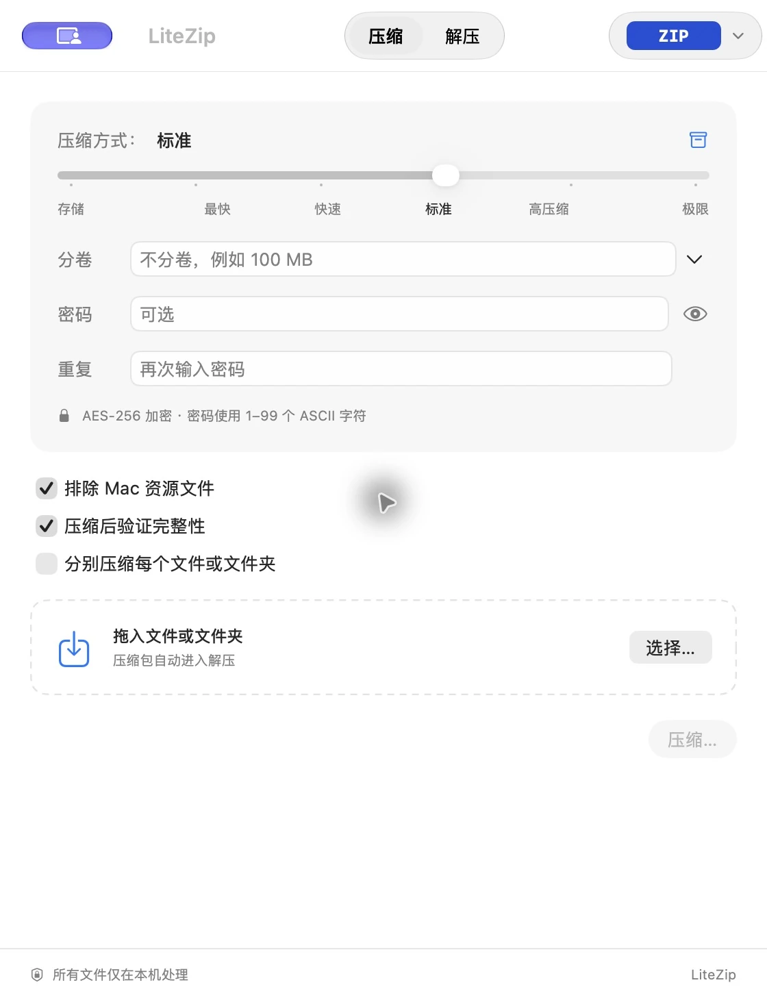

文件始终在本机。
无需账号，文件无需上传。没有广告，也没有遥测。
轻巧一点，简单一点。FOR MAC
压缩与解压，交给 LiteZip。
拖入文件就能开始，所有处理都留在你的 Mac。
macOS 13+ · Apple Silicon & Intel · 免费开源
很少的步骤，很顺手的体验。
文件和文件夹用来压缩，压缩包用来解压。格式、密码、分卷大小，都在一个窗口里。
也可以拖到菜单栏图标，或从 Finder 右键菜单开始。
选择格式、压缩等级，或加一个密码。
处理完成后，再去打开你的文件。

无需账号，文件无需上传。没有广告，也没有遥测。
多个文件可以打成一个包，也可以分别压缩每个项目。大文件支持分卷。
默认在压缩后校验完整性。解压建立独立文件夹，同名结果自动编号。
不只 ZIP。
日常打包，支持 AES 加密与分卷。
支持加密文件名、中文密码与分卷。
创建需要连接本机官方 RAR 引擎。
制作只读磁盘映像，支持 AES-256 加密。
支持 TAR.GZ、TAR.BZ2、TAR.XZ、TAR.ZST。
适合单个文件，轻松压缩与解压。
制作 ISO9660 / Joliet / UDF 映像，支持 Finder 挂载。
使用 Mac 原生 Apple Archive 打包文件与文件夹。
制作 Windows Imaging 归档，支持目录预览与解压。
单文件压缩，保留源文件，支持校验与解压。
适合快速处理的单文件压缩格式。
单文件 Brotli 压缩，生成 .br 文件。
处理单个文件，适合重复内容较多的数据。
快速单文件压缩，使用标准 framed 格式。
支持解压、内容预览与完整性校验。
RAR 解压已内置；创建 RAR 需单独安装并连接官方引擎。
开始前，你可能想知道。
LiteZip 免费开源，自有代码使用 MIT 许可。内置引擎按其各自许可分发。创建 RAR 所需的官方引擎采用独立许可，不包含在 LiteZip 中。
需要 macOS 13 或更新版本。通用构建同时兼容 Apple Silicon 与 Intel，无需选择不同安装包。
不需要。RAR 解压、预览和校验已经内置。只有创建 RAR 时，才需要连接你单独安装的官方 RAR 引擎。
在 macOS 系统设置中搜索“Finder 扩展”，启用 LiteZip Finder。之后可以通过右键菜单快速压缩、打开压缩设置，或解压到独立文件夹。
在 LiteZip 设置中开启“在菜单栏显示 LiteZip”。点击菜单栏图标选择格式，然后把文件或文件夹拖到图标上；默认保存到源文件所在目录，也可以开启“每次选择保存位置”。
ZIP 密码当前支持 1–99 个 ASCII 字符。中文、Emoji 和更长的密码请使用 7Z。系统归档工具不一定支持 AES 加密的 ZIP，请使用兼容的解压工具。
0.5.0 是开发预览版，已完成 Developer ID 签名与 Apple 公证，尚未完成完整大规模性能验收。请阅读发布说明，并保留重要文件的备份。